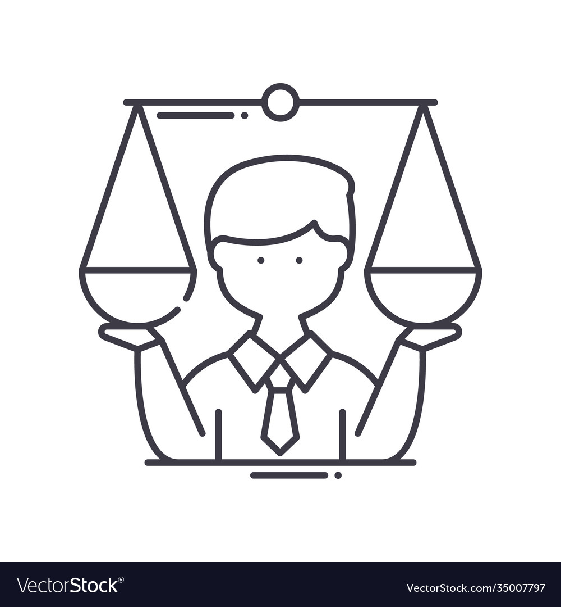

 
Prompt:
In May 2015 Science retracted - without consent of the lead author - a paper on how canvassers can sway people’s opinions about gay marriage, see also: http://www.sciencemag.org/news/2015/05/science-retracts-gay-marriage-paper-without-agreement-lead-author-lacour The Science Editor-in-Chief cited as reasons for the retraction that the original survey data was not made available for independent reproduction of results, that survey incentives were misrepresented and that statements made about sponsorships turned out to be incorrect.
The investigation resulting in the retraction was triggered by two Berkeley grad students who attempted to replicate the study and discovered that the data must have been faked.
FiveThirtyEight has published an article with more details on the two Berkeley students’ work.
Malicious changes to the data such as in the LaCour case are hard to prevent, but more rigorous checks should be built into the scientific publishing system. All too often papers have to be retracted for unintended reasons. Retraction Watch is a data base that keeps track of retracted papers (see the related Science magazine publication).
Read the paper Ten Simple Rules for Reproducible Computational Research by Sandve et al.
Write a blog post addressing the questions:
- Pick one of the papers from Retraction Watch that were retracted because of errors in the paper (you might want to pick a paper from the set of featured papers, because there are usually more details available). Describe what went wrong. Would any of the rules by Sandve et al. have helped in this situation?
‘I was fired up’: Psychiatrist effort prompts retraction of antidepressant treatment paper The article discusses suspected research misconduct in two studies on the use of metformin and cilostazol as adjunctive therapies for depression. The studies were conducted in Egypt and published in two journals. Eric Ross, a psychiatrist, raised concerns about the studies after noticing data irregularities. One study was retracted by the journal Neurotherapeutics, while the other study is still under investigation by the publisher of CNS Neuroscience & Therapeutics. The corresponding author of the papers denies any wrongdoing and has threatened legal action. Sandve et al.’s rules for detecting scientific fraud and misconduct may have helped in this situation, particularly rule #2 (Avoid Manual Data Manipulation Steps) and rule #1 (For Every Result, Keep Track of How It Was Produced). 2. After reading the paper by Sandve et al. describe which rule you are most likely to follow and why, and which rule you find the hardest to follow and will likely not (be able to) follow in your future projects.
Rule 1 is a good practice to follow. Keeping track of how results were produced ensures that my analyses can be reproduced, which is a fundamental aspect of scientific research. Reproducibility enables others to verify my findings, and for me to check and validate my own work. Additionally, it can help me spot errors and identify areas for improvement, leading to more robust and accurate results. Finally, it can enhance the transparency and credibility of my research. Rule 9 could be difficult to follow for me. Connecting textual statements to underlying results requires careful organization and documentation of data and analysis, which can be time-consuming and challenging to maintain, especially for large and complex projects. Furthermore, the rule may require a significant shift in my workflow and documentation practices, which may be hard to implement in my ongoing project working with collaborators who have different documentation styles or preferences. ## Submission 1. Push your changes to your repository.
- You are ready to call it good, once all your github actions pass without an error. You can check on that by selecting ‘Actions’ on the menu and ensure that the last item has a green checkmark. The action for this repository checks the yaml of your contribution for the existence of the author name, a title, date and categories. Don’t forget the space after the colon! Once the action passes, the badge along the top will also change its color accordingly. As of right now, the status for the YAML front matter is:

---
author: "Motina"
title: "The One Where Ethics Meet Reproducibility"
date: "2023-02-23"
categories: "Ethics and Reproducibility..."
---Reuse
Citation
@online{motina2023,
author = {Motina},
title = {The {One} {Where} {Ethics} {Meet} {Reproducibility}},
date = {2023-02-23},
langid = {en}
}